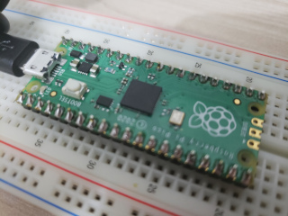
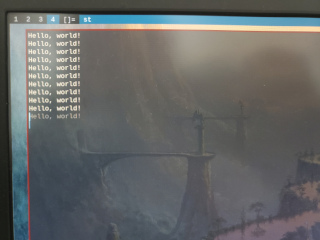

Recentemente adquiri o novo Raspberry Pi Pico (comprei na loja FilipeFlop). Esta placa é baseada no microcontrolador RB2040, projetado pela Raspberry Pi no Reino Unido. A placa é bem pequena, medindo aproximadamente 5cm x 2cm.
Também comprei uma barra de pinos, já que o Pico não vem com os conectores soldados. Tive que tomar coragem, tirar o ferro de solda do guarda roupa e realizar a solda. Felizmente tudo correu bem e, em menos de 5 minutos o Pico já estava com os conectores soldados.
O Raspberry Pi Pico foi lançado com uma uma excelente documentação disponível em raspberrypi.org. Lá é possível encontrar tudo o que você precisa para configurar o ambiente de desenvolvimento para o Pico.
Primeiramente, crie um diretório em seu sistema para abrigar os repositórios do SDK. Pode-se criá-los em qualquer lugar do sistema. Eu coloquei em ~/.local/share.
$ mkdir pico-sdk pico-examples pico-extras pico-playgroundDepois entre em cada uma destas pastas e clone os repositórios. Não é necessário clonar todos os repositórios. Se preferir, clone apenas o pico-sdk. Note que estou executando o comando git submodule update --init para que, caso existam subcomponentes nos repositórios, estes também sejam baixados.
$ cd pico-sdk
$ git clone https://github.com/raspberrypi/pico-sdk
$ git submodule update --init
$ cd ..
$ cd pico-examples
$ git clone https://github.com/raspberrypi/pico-examples
$ git submodule update --init
$ cd ..
$ cd pico-extras
$ git clone https://github.com/raspberrypi/pico-extras
$ git submodule update --init
$ cd ..
$ cd pico-playground
$ git submodule update --init
$ git clone https://github.com/raspberrypi/pico-playgroundDepois instale os componentes para o build system e cross compiler. No Arch os pacotes são cmake, arm-none-eabi-gcc e arm-none-eabi-newlib.
$ sudo pacman -S cmake arm-none-eabi-gcc arm-none-eabi-newlibAgora é hora de configurar as variáveis de ambiente. Isso é muito simples, bastando inserir no arquivo .bashrc os caminhos dos diretórios onde estão os repositórios.
export PICO_SDK_PATH="$HOME/.local/share/pico-sdk"
export PICO_EXAMPLES_PATH="$HOME/.local/share/pico-examples"
export PICO_EXTRAS_PATH="$HOME/.local/share/pico-extras"
export PICO_PLAYGROUND_PATH="$HOME/.local/share/pico-playground"Agora que a SDK do Pico está configurada, basta compilar os exemplos em pico-examples e testar a placa. Para isso, entre dentro da pasta e crie um subdiretórios build.
$ cd pico-examples
$ mkdir buildDentro do diretório build execute o comando cmake ..
$ cd build
$ cmake ..Isso vai gerar os arquivos de configuração para a compilação do projeto. Você pode agora direto do diretório build, executar o comando make. Isso vai compilar todos os projetos. Também é possível compilar apenas os projetos que você quer testar, bastando para isso executar o make dentro do diretório do programa. No exemplo abaixo, vamos compilar o blink e o hello_world:
$ cd blink
$ make
$ cd ..
$ cd hello_world
$ make
$ cd ..
Para testar os exemplos, basta copiar o arquivo de extensão .uf2 para o Raspberry Pi Pico. Para fazer isso, conecte a placa via USB no seu computador com o botão pressionado (o botão que há na parte superior do Pico próximo ao conector micro USB deste). Ao fazer isso o Pico será montado no seu sistema de arquivos. No exemplo abaixo, vou copiar o projeto blink para o Pico.
$ cp pico-examples/build/blink.uf2 /mnt/picoApós a cópia, o Pico será desmontado quase que imediatamente, e logo em seguida seu programa vai começar a executar. Isso vai fazer com que o pequeno LED na placa pisque em intervalos constantes. Parabéns, você conseguiu fazer o upload do seu primeiro programa.
Podemos agora testar o programa hello_world que se conecta com o computador pela interface USB e manda a mensagem Hello, world através da tty. Para isso, basta copiar o arquivo hello_world.uf2 para o Pico.
$ cp pico-examples/build/hello_world/usb/hello_usb.uf2 /mnt/picoApós isso, basta se conectar via tty utilizando um programa como o GNU screen e ver as mensagens na saída padrão.
$ sudo screen /dev/ttyACM0Pronto! Se você conseguiu rodar estes exemplos está pronto para iniciar no desenvolvimento para o Raspberry Pi Pico.